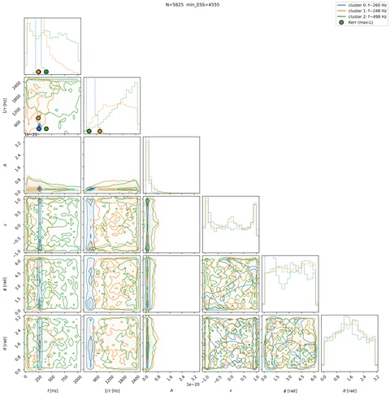
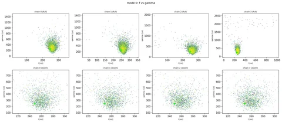
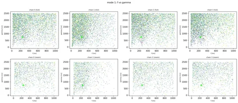
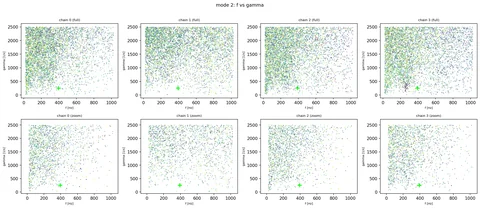
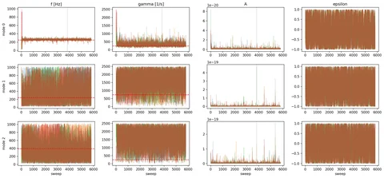
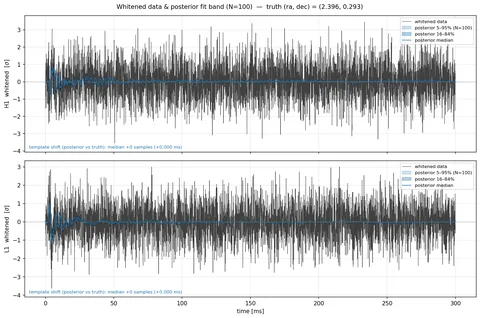
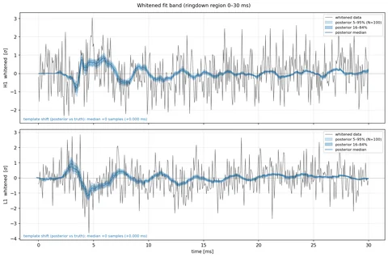

GW250114: 3-mode fit, start 12 M_rem after the IMR peak
run identifier n3/t12Mf · status converged
Ringdown fit of 3 damped sinusoid(s) to H1 and L1 strain, starting 12 M_rem after the IMR max-likelihood peak, with a 0.3 s analysis window. Posterior = 4 cold chains of a tempered sampler.
Run-table values: posterior median with the 5th and 95th percentiles (90% interval) shown as (+upper / -lower). Mode indices 0..N-1 are the sampler's EM-classified indices; they are not QNM labels and are not ordered by amplitude.
Prior box: f in [20, 1024] Hz, gamma = 1/tau in [1, 2500] 1/s. The 'near prior edge' column is the fraction of samples within 2% of the box width of either edge.
Settings
| n_modes | 3 |
|---|---|
| t_start [M_rem] | 12 |
Posterior summary
| f_0 [Hz] | 259.4 (+24.79 / -22.79) |
|---|---|
| gamma_0 [1/s] | 312.1 (+236 / -126.2) |
| f_1 [Hz] | 210.7 (+434.2 / -175.4) |
| gamma_1 [1/s] | 1473 (+913.2 / -1058) |
| f_2 [Hz] | 484.8 (+483 / -431.3) |
| gamma_2 [1/s] | 1845 (+601.2 / -1291) |
| network matched-filter SNR | 9.69 (+0.244 / -0.414) |
| max R-hat | 1 |
| min ESS | 4555 |
| divergences, cold chains (raw) | 54 |
Posterior summary (cold chains)
| mode index | parameter | median | 5% | 95% | unit | fraction near prior edge |
|---|---|---|---|---|---|---|
| 0 | f | 259.4 | 236.6 | 284.2 | Hz | 0 |
| 0 | gamma = 1/tau | 312.1 | 185.9 | 548.1 | 1/s | 0 |
| 0 | tau | 0.003204 | 0.001825 | 0.00538 | s | - |
| 0 | log10 A | -20.95 | -21.24 | -20.53 | - | - |
| 1 | f | 210.7 | 35.28 | 644.9 | Hz | 0.066 |
| 1 | gamma = 1/tau | 1473 | 415.5 | 2386 | 1/s | 0.024 |
| 1 | tau | 0.0006788 | 0.000419 | 0.002407 | s | - |
| 1 | log10 A | -20.81 | -21.97 | -19.96 | - | - |
| 2 | f | 484.8 | 53.51 | 967.7 | Hz | 0.05 |
| 2 | gamma = 1/tau | 1845 | 553.3 | 2446 | 1/s | 0.05 |
| 2 | tau | 0.0005421 | 0.0004089 | 0.001807 | s | - |
| 2 | log10 A | -21.01 | -22.19 | -19.98 | - | - |
Signal-to-noise ratio (posterior distribution over samples)
| SNR | median | 5% | 95% |
|---|---|---|---|
| network matched-filter | 9.69 | 9.28 | 9.94 |
| network optimal | 9.87 | 8.22 | 11.6 |
| H1 matched-filter | 7.24 | 6.91 | 7.43 |
| L1 matched-filter | 6.53 | 6.11 | 6.75 |
| H1 optimal | 6.78 | 5.53 | 8.2 |
| L1 optimal | 7.14 | 5.75 | 8.48 |
Stage-3 mode assignment
Stage 2 intersects posteriors over a start-time window of width dt (M_rem) from t_start = 0; Stage 3 labels the intersection modes. Method is fallback_mahalanobis with deviation_flag = true for every row, because the conformal prediction point has no amplitude or phase on real data. d_k = sqrt((f_k/f_220 - 1)^2 + (gamma_k/gamma_220 - 1)^2) is the distance of the predicted IMR QNM k from the predicted 220 mode, used to rank labels. It is not a distance of this posterior.
| dt [M_rem] | Stage-2 mode index | this run's mode index | QNM label (l.m.n) | d_k | method | deviation_flag |
|---|---|---|---|---|---|---|
| 5 | - | - | not in this window | - | - | - |
| 10 | - | - | not in this window | - | - | - |
Convergence and run health
| quantity | value |
|---|---|
| converged (sampler flag) | true |
| max R-hat (cold chains) | 1.0003 |
| min ESS | 4555.1 |
| sweeps total / burn-in | 5825 / 3825 |
| posterior samples (4 cold chains x post-burn-in sweeps) | 8000 |
| per-chain resets / collapse restarts | 0 / 0 |
| divergences, cold chains (raw per_chain_div_total; meaning not verified) | 54 |
| divergences, all 8 chains (raw per_chain_div_total; meaning not verified) | 66 |
| wall clock [min] | 89.6 |
Figures (7)
{kind=link}

{kind=link}

{kind=link}

{kind=link}

{kind=link}

{kind=link}

{kind=link}
